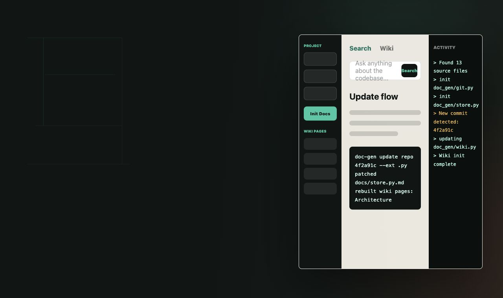

Generate file docs from source
Point doc-gen init at a repository and it creates markdown docs for each selected
tracked source file with content hashes for cheap future skips.

Hackathon build kit for codebase knowledge
Incremental LLM-powered documentation from git history. Create per-file markdown for selected source files, patch existing docs from commit diffs, then synthesize a wiki your team can query.
What it solves
Point doc-gen init at a repository and it creates markdown docs for each selected
tracked source file with content hashes for cheap future skips.
Feed a commit SHA into doc-gen update. Existing docs update from unified diffs;
new files fall back to full-file generation.
Build wiki pages from a manifest, search local markdown, or enable Cognee for semantic graph search and impact analysis.
System flow
List files, load content at refs, and collect commit diffs with GitPython helpers.
Generate markdown files and stamp each page with a hash of the source content.
Resolve wiki.yaml globs and compose focused pages with optional Mermaid diagrams.
Search wiki pages first, fall back to file docs, and optionally use Cognee results.
Local demo
The core path is intentionally short: initialize docs, update them from a commit, generate a manifest-backed wiki, then ask a question. The FastAPI app exposes project init, wiki init, search, wiki browsing, and a live activity log.
doc-gen init /path/to/repo --ext .py --docs-dir docs
doc-gen update /path/to/repo <commit-sha> --ext .py --docs-dir docs
doc-gen wiki-init /path/to/repo --docs-dir docs
doc-gen query "how does the update flow work?" /path/to/repo --docs-dir docs
uvicorn doc_gen.server:app --reloadBuilt from the repository
cli.pyCommands for init, update, replay, wiki generation, query, and Cognee ingestion.
store.pyMarkdown persistence, frontmatter hashes, and local keyword search.
server.pyFastAPI routes, WebSocket activity, language detection, search, and wiki browsing endpoints.
wiki.pyProfessional wiki page prompts, quick starts, and incremental wiki patching.
Output
The product writes markdown documentation and manifest-driven wiki pages for your repository. Teams can browse generated pages in the local web UI, search across project knowledge, and move the markdown output into the documentation surface they already use.